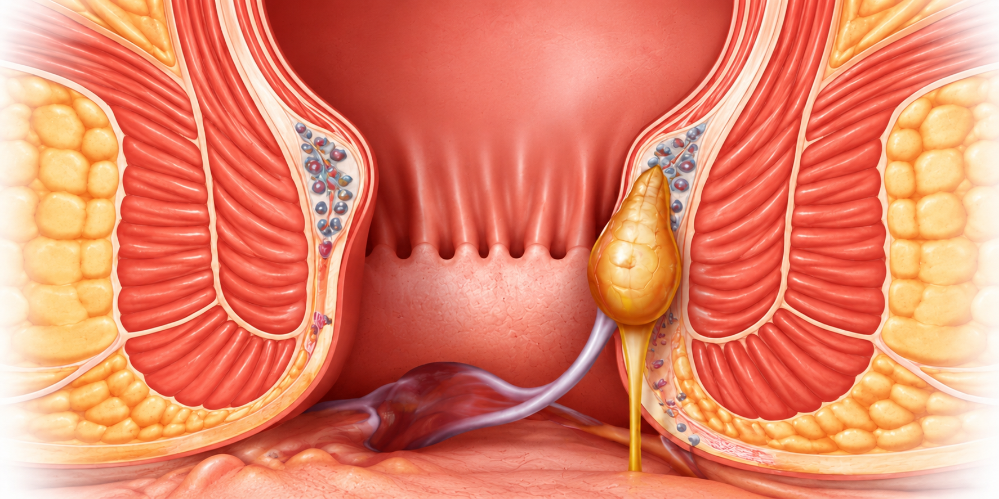

An anal fistula, also called fistula in ano, is a small tunnel between the inside of the anal canal and the skin around the anus. It often shows up as a boil near the anus that keeps coming back or keeps draining pus.
Dr. Pradipkumar Tupere, a proctologist and general surgeon at Navoday Clinic in Kharadi, Pune, maps the tunnel before advising treatment. A fistula rarely closes completely on its own, and the right procedure depends on where the tunnel runs.
At a glance
| Topic | In brief |
|---|---|
| What it is | A tunnel linking the anal canal to the skin near the anus, usually left behind after an anal abscess. |
| Common signs | A boil near the anus that keeps returning, pus or blood-stained discharge, pain, itching and skin irritation. |
| See a doctor if | A boil or discharge near the anus keeps coming back, or you have pain with fever. |
| Who treats a fistula | A proctologist or a general surgeon who treats anorectal conditions. |
| Where | Navoday Clinic, Kharadi, Pune. |
Symptoms of an anal fistula
Symptoms usually come and go, and they often follow an abscess, which is a painful collection of pus near the anus.
- A boil or swelling near the anus that bursts and drains, then comes back.
- A small opening in the skin near the anus that leaks pus or blood-stained fluid.
- Pain or throbbing, often worse when sitting, passing stool or coughing.
- Itching, redness or irritation of the skin around the anus.
- Fever and a feeling of being unwell when pus collects again.
See a doctor soon if
- You have severe, throbbing pain and swelling near the anus, especially with fever, because an abscess may need prompt drainage.
- You have diabetes or a weak immune system and notice a painful swelling near the anus.
- Discharge near the anus has continued for more than a couple of weeks.
- You also have blood in the stool, a change in bowel habit or weight loss.
Discharge near the anus can have other causes, so it needs an examination to confirm a fistula.
Why anal fistulas develop
Most anal fistulas begin as an infection in one of the small glands inside the anal canal. When the infection forms an abscess and drains, a tunnel can remain. Causes include:
- A previous anal abscess, which is the most common cause.
- Crohn's disease and other inflammatory bowel conditions.
- Tuberculosis and other infections.
- Earlier anal surgery, injury or radiation treatment.
- Less commonly, cancer.
Types of fistula, in plain words
| Type | In plain words | What it means for treatment |
|---|---|---|
| Low (simple) fistula | The tunnel passes through little of the sphincter muscle. | Often treated by opening the tunnel. |
| High (complex) fistula | The tunnel passes through more of the muscle, or has several branches. | Needs a plan that protects the muscle that controls stool. |
Where the tunnel runs decides the treatment, which is why mapping it comes first.
How an anal fistula is diagnosed
Diagnosis starts with an examination, and the key step is mapping the tunnel. Where the tunnel runs in relation to the sphincter muscles decides the treatment.
01
Your history
Dr. Tupere asks about earlier abscesses, the discharge, the pain, other illnesses such as Crohn's disease, tuberculosis or diabetes, and any earlier anal surgery.
02
Examination
He looks for the opening in the skin, feels along the tunnel and checks the anal canal.
03
Mapping the tunnel
For a complex or returning fistula, he may advise an MRI scan of the area (an MRI fistulogram) or an ultrasound from inside the anal canal. A missed side branch is one reason a fistula can come back.
04
Further tests when needed
If Crohn's disease or tuberculosis is suspected, he may advise blood tests and a colonoscopy.
Anal fistula treatment options, chosen after mapping
A fistula does not usually close by itself, so treatment is most often a procedure. The aim is to close the tunnel and protect the muscles that control stool, so the choice depends on where the tunnel runs. Dr. Tupere advises the right option only after examining you.
Can a fistula be treated without surgery?
Antibiotics and dressings can settle an infection or abscess for a time, but they do not close an established fistula, and medicines and creams do not either. A few less invasive methods, such as fibrin glue or a plug, suit selected patients and give mixed results. Dr. Tupere explains which options may suit your fistula.
General guide to procedures
| Procedure | How it works | When it is considered |
|---|---|---|
| Fistulotomy (laying open) | The tunnel is opened along its length and left to heal from the base. | A low (simple) fistula. |
| Seton placement | A soft thread is passed through the tunnel to keep it draining while the infection settles, or to open it slowly. | A complex fistula, or as a first stage. |
| LIFT (ligation of the intersphincteric fistula tract) | The tunnel is tied off and divided between the sphincter muscles, so the muscle is not cut. | Selected fistulas that cross the sphincter. |
| Advancement flap | The inner opening is closed with a flap of healthy tissue. | A complex fistula. |
| VAAFT (video-assisted anal fistula treatment) | A thin scope is passed into the tunnel so the surgeon can see it, clean it and close the inner opening. | Selected fistulas, if offered. |
| Laser fistula closure | A laser fibre treats the lining of the tunnel from inside. | Selected fistulas, if offered. |
Each option has its own suitability, risks and recovery. Risks include the fistula coming back and, with some procedures, a change in muscle control, which Dr. Tupere explains before you decide.
Consult Dr. Pradipkumar Tupere for an anal fistula
Dr. Pradipkumar Tupere is a proctologist and general surgeon with an MBBS and an MS in General Surgery. His training for fistula includes laser surgery for fistula in Austria, and VAAFT and CLIS techniques in Mumbai.
In 2014 he gave an international paper presentation on treatment modalities for fistula-in-ano.
What to expect at your visit
- Book: Call, message on WhatsApp or use the form. We confirm your appointment slot.
- Bring: Any earlier reports or scans, notes on earlier abscesses or drainage, a list of the medicines you take and your questions.
- Consultation and examination: Dr. Tupere listens to your symptoms and examines you to assess the affected area.
- Mapping and your plan: Your fistula may need an MRI scan before a procedure is planned. He then explains your diagnosis and your options.
If a procedure is advised: Most fistula procedures are planned in advance, done under anaesthesia and followed by wound care and several follow-up visits, because healing takes weeks.
Anal fistula: frequently asked questions
An established fistula rarely closes completely on its own. The discharge may settle for a while, but the tunnel usually remains and the infection can return. An examination shows what is needed.
Medicines, antibiotics and creams do not close an established fistula, although antibiotics may settle an infection for a time. A few less invasive methods suit selected patients, but a procedure is usually needed. Dr. Tupere explains which options suit your fistula.
Most fistulas start as an infection in a small gland inside the anal canal that forms an abscess. Less often, a fistula is linked to Crohn's disease, tuberculosis, earlier surgery or injury.
An abscess is a painful collection of pus near the anus. A fistula is the tunnel that can remain after an abscess drains. Piles are swollen veins and are a different problem, although they can also cause bleeding. An examination tells them apart.
The usual signs are a boil near the anus that keeps returning, pus or blood-stained discharge from a small opening in the skin, pain, itching and skin irritation. Fever can mean pus has collected again and needs prompt attention.
Fistula procedures are common, but every option has risks. A fistula can return, particularly when it is complex or a side branch is missed, and some procedures can affect control of gas or stool. Mapping the tunnel first and choosing the right procedure help reduce these risks. Dr. Tupere explains the risks for your fistula before you decide.
Recovery depends on the procedure and the fistula. Wounds can take several weeks to heal, and you will have follow-up visits to check healing.
The cost depends on the type and complexity of the fistula, any scans, the procedure chosen, the type of anaesthesia and the facility used. A fixed price cannot be given before an examination and mapping, so Dr. Tupere explains the plan and the expected cost at your consultation.
You can see a proctologist or a general surgeon who treats anorectal conditions. Dr. Pradipkumar Tupere is both, and he consults at Navoday Clinic in Kharadi, Pune.
You can consult Dr. Pradipkumar Tupere, a proctologist and general surgeon at Navoday Clinic, Kharadi, Pune, for anal fistula evaluation and appropriate treatment guidance.